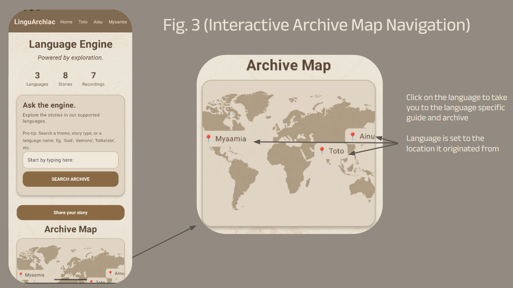

GEOGRAPHIC EXPLORER
Interactive Language Map.

User can explore specific languages through the map. The map allows for an understanding of the geographic location of the language, and of why the language is currently endangered. Clicking on the language will take the user to the "Language Specific Screen".